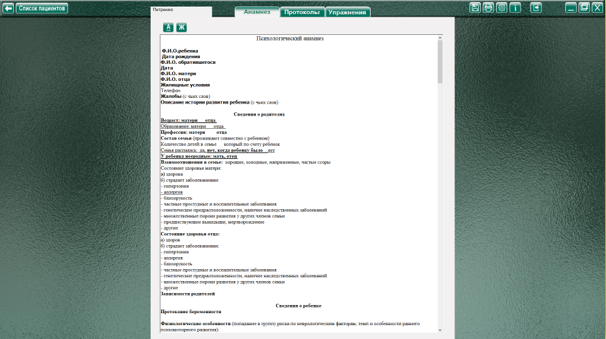
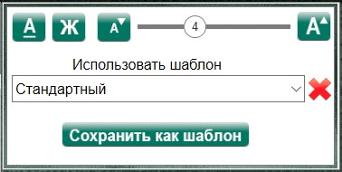
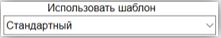
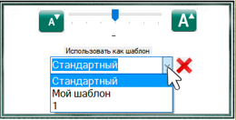
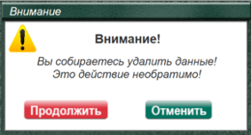

Анамнез представляет собой текстовый документ с предложенной формой и порядком вопросов. Первые два пункта (ФИО и Дата рождения) являются обязательными, так как эти данные используются программой для отображения в списке пациентов, в упражнениях и в протоколах фиксации результатов исследования. Остальные строки можно редактировать и удалять по своему усмотрению и необходимости так же, как в любом текстовом редакторе (например, Word).
Описание элементов управления.
Кнопка «Подчеркивание» - Включает подчеркивание текста (например, для имитации «тельняшки» можно использовать набор текста с включенным подчеркиванием (или подчеркиванием выделенного/выбранного текста).
Кнопка «Жирный шрифт»
Кнопка «Настройки» - открывает панель с дополнительными настройками для этой страницы.

Кнопка «Уменьшить шрифт»
Кнопка «Увеличить шрифт»

Кнопка «Сохранить» позволяет сохранить отредактированную форму анамнеза в качестве шаблона. После редактирования документа «Анамнез», открыть меню настроек, поставить курсор мыши в строку с названием шаблона (текст становится выделенным синим), ввести свое название для отредактированного документа и нажать кнопку «Сохранить». В дальнейшем этот шаблон будет открываться по умолчанию при создании нового пациента.
Для выбора другого шаблона нажать на стрелочку справа от названия используемого. Откроется меню сохраненных шаблонов, в котором пользователь сможет найти и загрузить нужный.

 Кнопка «Удалить» - удаляет отображаемый в меню шаблон анамнеза из программы (Внимание! Это действие НЕОБРАТИМО!) Перед удалением появляется окно предупреждения
Кнопка «Удалить» - удаляет отображаемый в меню шаблон анамнеза из программы (Внимание! Это действие НЕОБРАТИМО!) Перед удалением появляется окно предупреждения

При нажатии «Продолжить» - выбранный шаблон удаляется. Пока открыто окно предупреждения, остальные элементы недоступны, пока пользователь не закроет данное окно, сделав выбор «продолжить» или «отменить». При попытке выполнить другие действия, программа подаст звуковой сигнал ошибки, и окно «провибрирует» привлекая внимания пользователя.